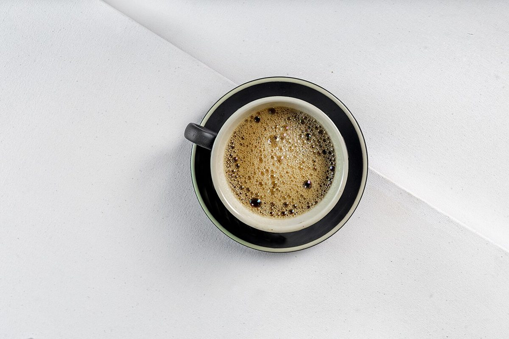

店のこと
店のこと
お店について確認できているのは、所在地・電話番号・Instagramのアカウントだけです。
このページの「想像してみる」部分は、制作側が想像して書いたものです。お店の実際の様子・考え・メニューとは関係がありません。
確認できていること
- 店名は「エムズカフェ」、業種はカフェ
- 所在地は新潟県南魚沼郡湯沢町湯沢3丁目3-19 2階(〒949-6101)
- 電話番号は 025-784-3322
- Instagramは @mscafe_yuzawa
- 営業時間・定休日・メニュー・価格・ご予約・駐車場は準備中

想像してみる
数字のはしごを、M まで。
由来は分かりません。制作側は、I から数えはじめて M までのぼりつめる、ローマ数字の7段のはしごを思い浮かべました。ただそれだけの連想で、お店の実際の姿ではありません。
| I | V | X | L | C | D | M |
|---|---|---|---|---|---|---|
| 1 | 5 | 10 | 50 | 100 | 500 | 1000 |